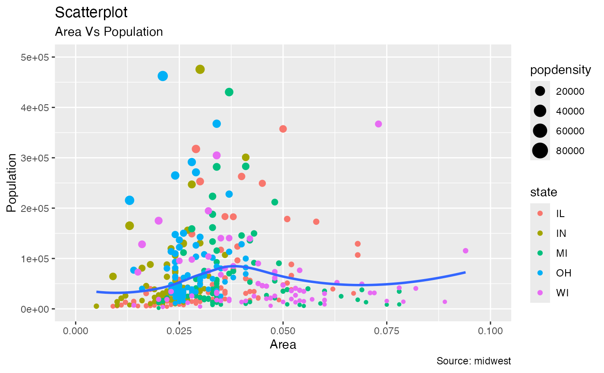

Easily change the background color for a ggplot. Changes both the panel
and plot backgrounds to the same desired color_bg. Can also change the
border color of the plot with color_border
background_color(color_bg = "white", color_border = "black")# Make example plot:
library(ggplot2)
data("midwest", package = "ggplot2")
plot <- ggplot(midwest, aes(x = area, y = poptotal)) +
geom_point(aes(col = state, size = popdensity)) +
geom_smooth(method = "loess", se = FALSE) +
xlim(c(0, 0.1)) +
ylim(c(0, 500000)) +
labs(subtitle = "Area Vs Population",
y = "Population",
x = "Area",
title = "Scatterplot",
caption = "Source: midwest")
plot
#> `geom_smooth()` using formula = 'y ~ x'
#> Warning: Removed 15 rows containing non-finite outside the scale range
#> (`stat_smooth()`).
#> Warning: Removed 15 rows containing missing values or values outside the scale range
#> (`geom_point()`).

# Change the background color to blue
plot + background_color('blue')
#> `geom_smooth()` using formula = 'y ~ x'
#> Warning: Removed 15 rows containing non-finite outside the scale range
#> (`stat_smooth()`).
#> Warning: Removed 15 rows containing missing values or values outside the scale range
#> (`geom_point()`).
# Change the background color to white and border to blue
plot + background_color(color_bg = 'white', color_border = 'blue')
#> `geom_smooth()` using formula = 'y ~ x'
#> Warning: Removed 15 rows containing non-finite outside the scale range
#> (`stat_smooth()`).
#> Warning: Removed 15 rows containing missing values or values outside the scale range
#> (`geom_point()`).